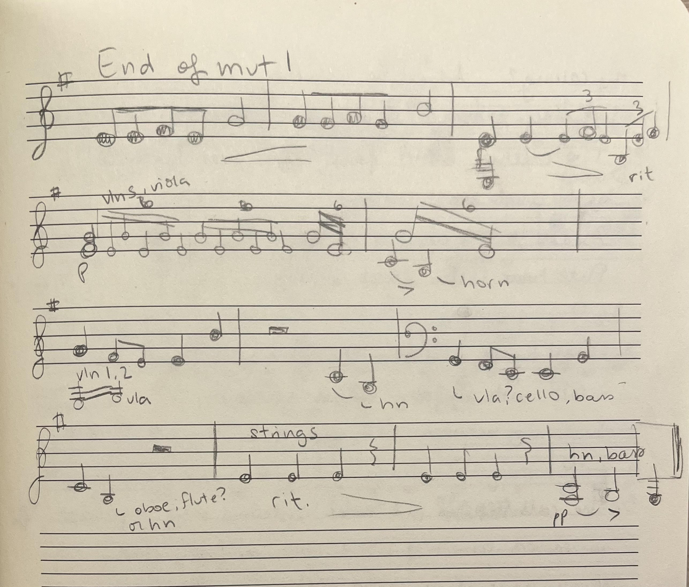

There are many ways one can write music: you can do it the good ol' fashion way of notating with pencil and paper, or you can take advantage of the many music notation software available to write music. I personally use Musescore because it is free and open-source (and their new update made their instruments sound sooooo much better!), but other options might be Sibelius or Finale.
Sometimes I start composing right away in Musescore, and other times, I write my ideas by hand, and then input it into Musescore. Here is an example of some of my thought processes I had for the ending of a symphony I am working on, which I first put on paper, then brought to life with Musescore! You can see some of the ideas from the written sketch appear in the final version in the video.  Writing music in software or by hand each have their advantages or disadvantages, as discussed below.
Music notation software has several cognitive advantages compared to writing music the traditional way using pen and paper:
Musescore's playback of my music helps me a lot in my work because I will often imagine a melody with a harmonization, but when I go to write it down and play the melody back to me, I realize it sounds pretty bad, which allows me to make some changes quickly. You can notice that not everything in my sketch above was included in the final version (for example, the second and third bars of the last line are three quarter notes, but I doubled their length in my final piece because I thought that quarter notes were too quick). That's because I had tested my initial ideas out first, and changed them when I heard that my idea did not sound as expected. In a way, this software gives me feedback right away on what I am composing which might not be possible if I have to wait to hear the piece performed by musicians. This idea of immediate feedback is key in operant conditioning because you will be less likely to produce a response to a stimulus if you delay the reward or punishment, and thus, you won't learn as well (Lecture 3). However, this does comes with its own risks...
Music software is great, but it is not always the solution to all composition problems. Here are a couple of things to be aware of, especially if you are a novice composer:
In Musescore, there is the "slow" way of inputting notes, and there is the more complicated and "fast" way to input notes. The slow way involves using the mouse and clicking on the line in which you put the note and you have to manually click the note value at the top of the change to change the rhythm. The fast way involves inputting notes using the letters on the keyboard and changing note values using the numbers, which means that you need to memorize which note value is associated with which number, which is extra cognitive effort to learn. Luckily, many resources exist to answer questions we might have, such as documentation or online communities. After lots of years of using Musescore, although I am not completely an expert in the software, I have developed an automaticity in how I write my melodies, so I no longer have to consciously think about which keys I need to press if I want to write a eighth note A for instance. This gives me extra room in my working memory for me to think about more important issues when composing (lecture 6).